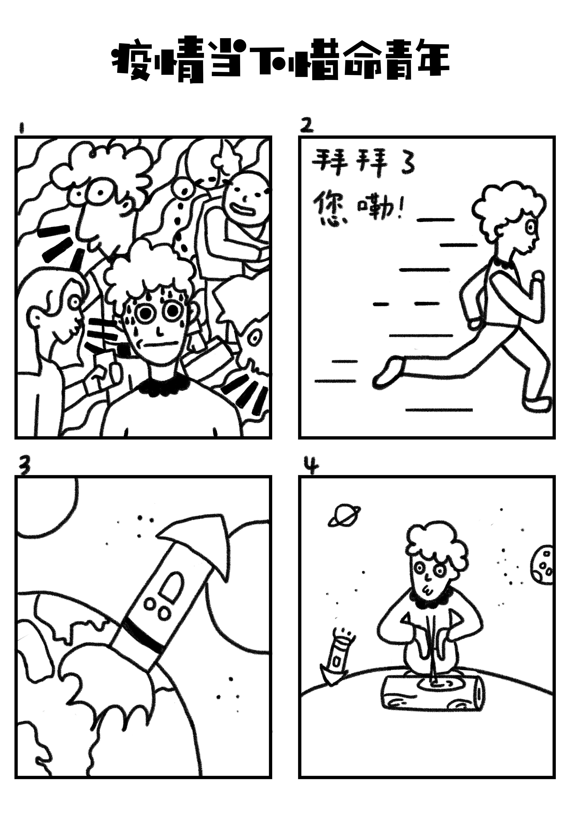
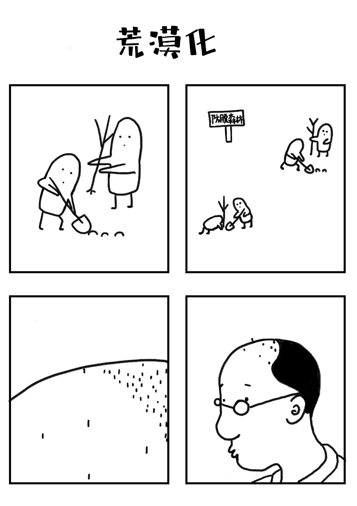
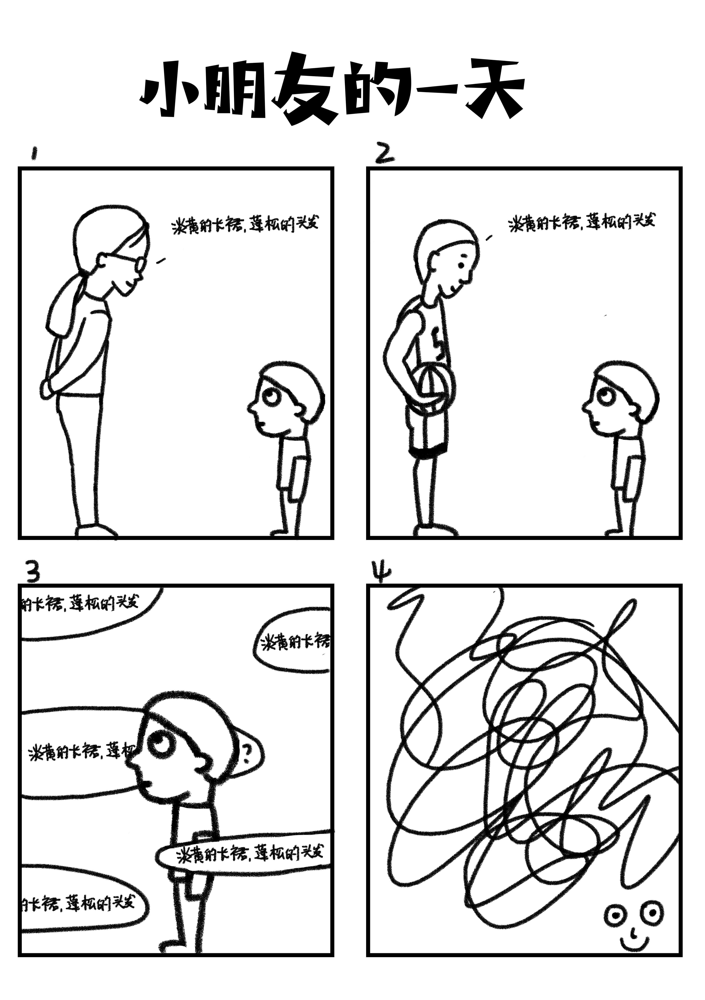
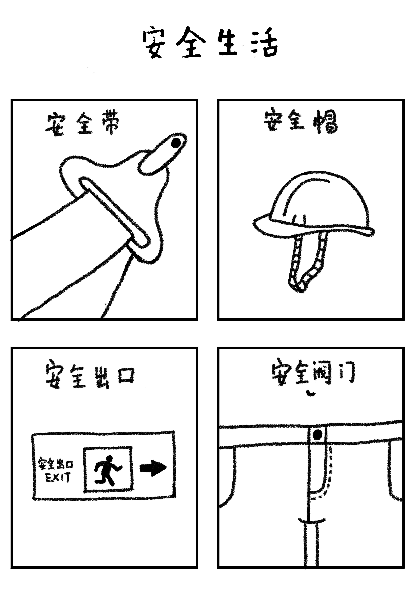
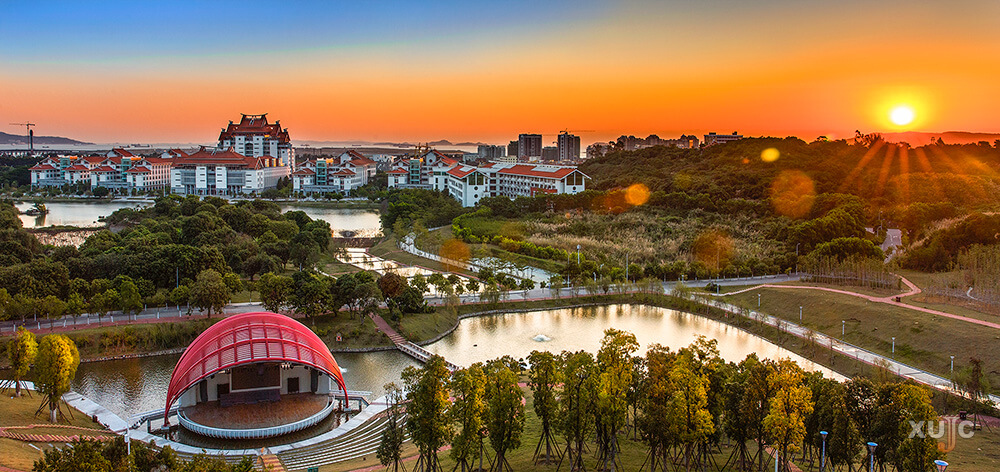
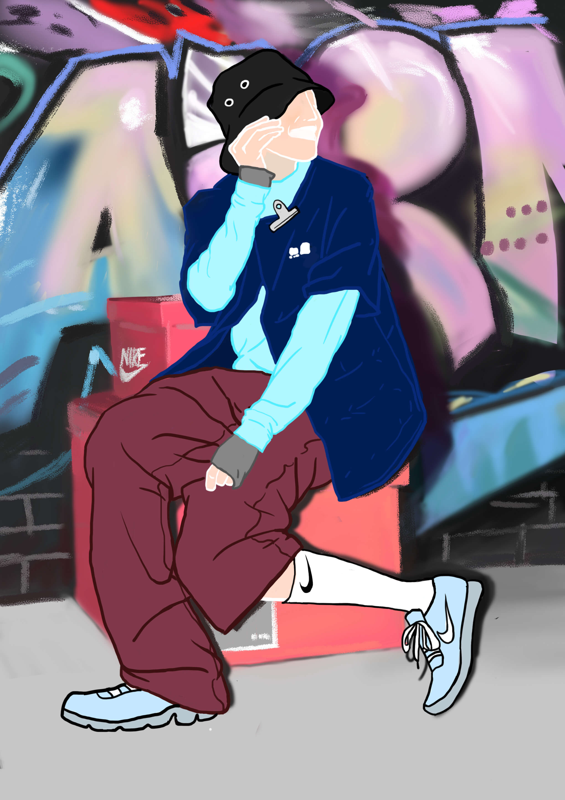

对于大部分的同学来说，在大学期间制作一份精彩优秀的作品集很重要。一份作品集看似简单，但是要经过不断改正、不断汲取营养才能进步的。一般的20页左右的作品集怎么才能让人眼前一亮呢，其中可是大有学问。我是在大一开始想要准备一份自己的作品集的，要想准备一份优秀的作品集，不仅要在自己的作品中下功夫，有的时候，通过浏览别人的优秀作品，也会让我们受益良多。通过翻阅别人的作品集，可以做到取其精华，去其糟粕，开阔自己的设计思路，同时又能避免一些雷区。
IDEA
Caricature漫画
《PEACE》
来自大二的作品故事围绕一名疫情下的男大一学生（元然）讲起，他的生活节奏变得慢了下来，逐渐享受了这种宅家的日子，每晚睡的很好，一天，窗外路过一只小鹿，睡眠中的他丝毫没有察觉，突然它对元然大叫，他惊醒，元然跟随郭子去到林子的桃花源一样的地方，是他们生活的地方，唯一没有被人类侵占的地方。之后元然与它的伙伴郭子开始了冒险之旅（主剧情），到了动物的领域，这里的动物都讨厌人类，决定把元然留下当佣人，元然和他关系很好，他和郭子在大街上走，最后一起回到了家。
主题思想：以当下社会热点发想的奇幻无厘头剧情，以动物和人为主角引发读者的换位思考，是人的贪婪导致了现在生态环境的恶劣，导致无法出门，想想和动物换了身份之后会有怎样的故事，也很憧憬和动物和谐相处的社会。
事件发展: 从开始的封锁宅家，感受到人类二氧化碳减少后，天空都变得晴朗，表现人类活动的过度频繁。到出门才感受到世界真实该有的样子。
小作品
   Illustration插画
《蜕变》
来自大一的作品-灵感来自歌曲：蜕变我在黑暗中游走
呼吸都是一种试探
我在和我自己交谈
要怎样可以飞向云端
我走在梦的边缘
曙光正在天边闪现
有声音提醒我
别放弃
Please don't let me go
原来我是自己的对手
灵魂等待被自我主宰
不用可以表态去满足别人留给我的期待
现在是蜕变的时候
我需要给心一个交代
就算会是遗憾
局部
日常喜欢画的风格
School我的学校
创办于2003年，是经国家教育部批准，由教育部直属重点大学厦门大学和厦门嘉庚教育发展有限公司共同举办的，按新机制和新模式运作的独立学院。
2003年10月21日，时任国务委员陈至立、福建省委副书记黄瑞霖为厦门大学嘉庚学院揭牌，掀开了嘉庚学院向优质大学奋进的历史。历经16年的跨越发展，嘉庚学院目前已设有涵盖理学、工学、文学、经济学、管理学、法学、艺术学等学科的12个学院、2个独立系、2个教学部、2个教学中心、2个实践教学训练中心和1个科研中心，54个本科专业，82个专业方向，拥有在校本科生约19000人、硕士研究生78人（与厦门大学联合培养）。嘉庚学院自办学之日起在福建省即在本二批次招生，生源质量逐年提高，近六年嘉庚学院在全国招收本一线上考生1085人，全国本二线上考生数突破98.9%。嘉庚学院面向全国31个省（自治区、直辖市）招生，是福建省省属院校中省外生源比例最高的院校，省外学生人数占在校生人数的58%。2018年12月，教育部高校招生阳光工程指定平台“阳光高考”发布了各省20所考生最满意高校名单，嘉庚学院在福建省高校中排名第二，仅次于厦门大学。
About me关于我
做个自我介绍啦
我叫查娜
爱好：服装设计 动画 插画 摄影 鸡涌
愿意尝试新事物
很多作品灵感都来源于我的爱好了，从偶像身上从生活中的点点滴滴，不起眼的小事物
